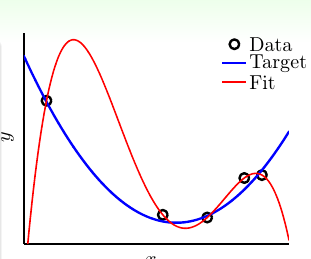
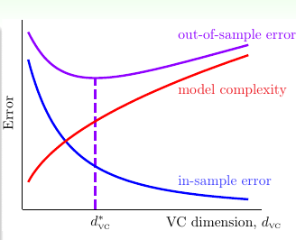
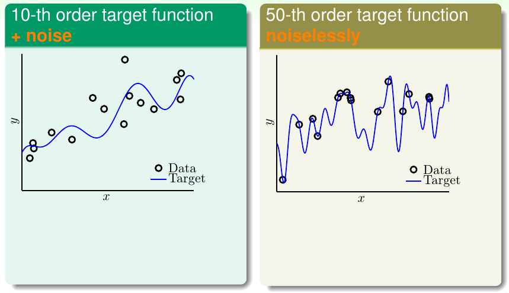
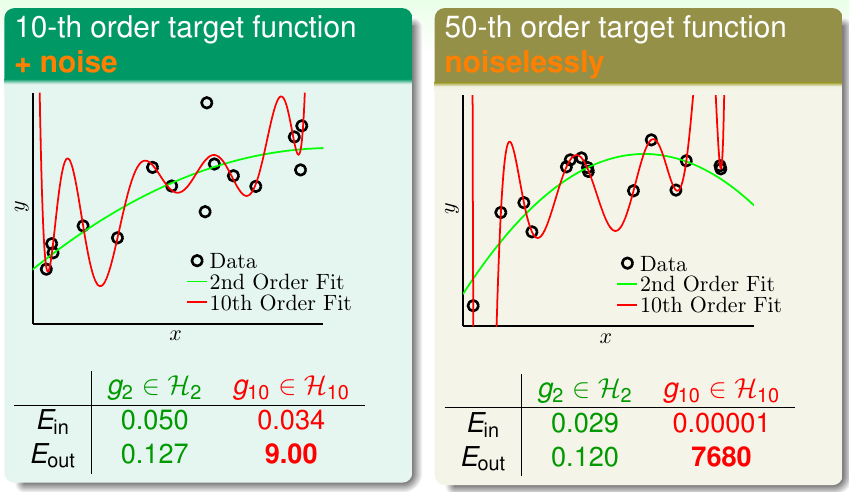
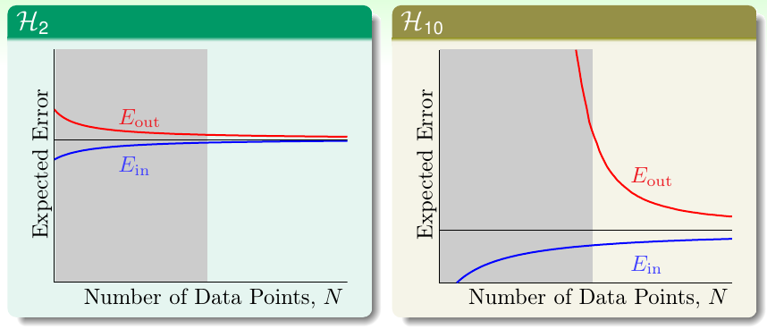
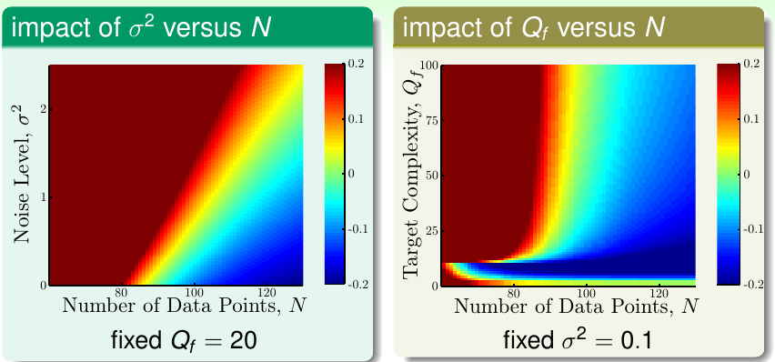
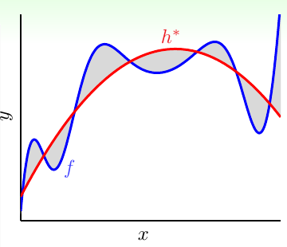

《机器学习基石》系列课程（十三）
今天我们学习什么是过拟合，它有什么危险以及该怎样处理过拟合！
What is Overfitting
我们首先从一个例子出发。想象我们在二维平面上有5个数据点，我们需要根据这些数据来学习一个Regression问题。其中，每个点的y都是根据targert f产生的（可能会添加一些噪音），也就是说我们想要学习的线是蓝色的线：

我们使用的方法是学习Z空间中的一条直线，并试图让这些数据点落在直线上。然而我们最终可能学习到的是一条4次曲线，它恰好能让所有的点都落在z空间的直线上，此时Ein为0。然而，明显的是Eout必然很大，这就说明我们学习到的模型泛化能力很差（bad generalization）！

就像上图那样，如果我们学习的模型的维度很高，远远大于dvc，那么此时学到的就是bad generalization！从dvc=d*vc开始，向右边移动，此时Ein越来越小但是Eout越来越大，此时就是过拟合(Overfitting)，向左边移动，可以称为underfitting！
我们将Ein很小但是Eout很大称为有较差的泛化能力（bad generalization）。对于Ein逐渐变低，Eout逐渐变高的这个过程，称为Overfitting！
对于Overfitting，我们做一个形象的比喻：将其比喻开车出了车祸，出现了这个问题的原因：
- 车开的太快，油门踩的太重：使用了自由度更大的模型，dvc太大，Ein可以更小，但是模型复杂度更高，难以做到Ein和Eout接近。
- 路不是很平：数据中包含噪音。
- 油不够了：数据太少。
The Role of Noise and Data Size
现在我们举一个例子：例子一是使用一个10次target function生产的一些数据，然后添加一些Noise，例子二是一个50次的target function生产的一些数据，不加噪音：

我们看一看从二次的假设空间到10次的假设空间进行学习会发生什么？

很明显，两个例子的Learning在从g2到g10的过程都发生了overfitting！
我们从Learning结果中发现，尽管我们知道第一个例子的目标函数是10次多项式，然而我们的结果却是10次的Learning Model做的很糟糕，相反2次的却做的比较好（Eout更好）！
我们重新看一看学习2次和10次的Learning Curves，看看我们能发现什么：

我们发现只有在数据量非常大的时候，10次的Learning Model才能获得好的Eout，相反对于2次多项式模型，获得较好的Eout所需要的数据量并不那么过分！
我们比较这两张图，可以看到Ein一定是高次的更低，但是如果我们没有足够多的数据，一般不能选择高次的Learning Model！
那么对于没有Noise呢，看起来好像还是g2做的更好！但是此时真的没有Noise吗？实际上当我们学习的东西很复杂的时候，这个复杂度也会造成Noise。就像用50次的target function生成的数据，我们使用更低次的Learning Model去fit，那么这二者复杂度之间的差异将会带来Noise！
Deterministic Noise
我们可以通过实验来探讨我们使用的模型复杂度、数据的噪音和数据的数量和Overfit Level有什么关系，现在我们直接来看实验结果：

对于第一张图，我们模型的复杂度固定为20次，横轴是数据量N，纵轴是添加的噪音的级别。图中红色越深表示Overfitting越严重，蓝色越深表示模型表现越好。我们可以看出，随着噪音级别增大，所需要的数据量N也越多，这有这样才能避免Overffiting。
对于图二，研究的是数据量和模型复杂度的关系，同样，越复杂的模型需要更多的数据！
从上面的实验结果，我们可以总结Overfit会发生的情况：
- 数据减少。
- 随机噪音增多。
- deterministic noise增多。
- 模型复杂度增大

deterministic noise，也就是我们Learning到的最好的h和目标函数f之间的差异。就如上图所示，我们的target function是蓝色的线，但是我们使用2次模型来fit这个f，此时我们获得红色的线，二者之间灰色的区域就是存在的noise。其表现和随机噪音实际上没有什么区别，二者的区别在于deterministic noise依赖于我们所选择的假设空间，对于每个x，它都是固定的！
这也说明，如果我们要学习一个简单的任务，我们就不能使用一个更复杂的模型！
Dealing with Overfitting
那我们该怎样处理Overfitting呢？一般有这样集中方法：
- 从简单的Model开始，逐渐增加模型的复杂度。
- 尝试去掉噪音（数据清洗等），这种方法可能有用，但是很多时候作用是有限的。
- 使用更多的数据，然而可能获取新的数据很难，我们可以通过对原始的数据进行微调来增加新的数据，如对于图片数据，可以将其旋转等，然而在这个过程我们必须要让新加入的数据是有道理的，否则会导致数据分布偏离原有的分布，那么会导致我们学到的东西和目标偏差过大！
- 使用正则化（及时踩刹车）。
- Validation（经常看看现在的状况）。
对于4和5是下面两章的重点。
文章内容和图片均来自“国立台湾大学林轩田老师”的《机器学习基石》课程！
— END —